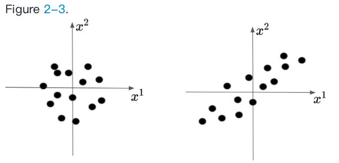

书籍 Bayesian Optimization Theory and Practice using Python 之Gaussian Process
目录
1. 理解covariance matrix
Gaussian Process is a stochastic process used to characterize the distribution over function.
GP将一组有限的参数theta从一个连空间拓展到一个连续无限空间的一个无限函数f。
假设我们有两个变量，X1和X2，它俩符合multivariate Gaussian distribution。

一个高斯分布可以用mean vector 和covariance matrix来表示。均值向量描述了从高斯分布重复采样的集中趋势，协方差矩阵描述了点之间的相关性。（The mean vector describes the central tendency if we were to sample from the Gaussian distribution repeatedly, and the covariance matrix describes how the features of the data are related to each other）
假设mean vector matrix K为：
K 可以告诉我们，当x1增加的时候，x2变化的大小和方向是如何变化的。K用点积来衡量x1维和x2维的相似性。
$$\sigma_{11}^2 = var(x_1) = E[(x_1-E[x_1])^2] = E[(x_1)^2]$$
$$\sigma_{12}^2 = \sigma_{21}^2 = E[(x_1-E[x_1])(x_2-E[x_2])] = E[x_1x_2]$$
有 $E[x_1] = E[x_2] = 0$
图左边和右边的分布为
左侧的协方差项为0，表示变量不相关。右侧的协方差项为0.6，表示存在正相关性。
2. 多元高斯分布的边缘分布和条件分布
上述的例子是一个二元高斯分布，它有两个特征，x1和x2。在处理多元高斯分布时，我们通常对特征分布的边缘分布和条件分布感兴趣。
边缘分布
假设现在观察到x_2的值为a，那这个信息对x_1的分布会有什么影响吗？我们关注的是在x_2=a的条件下x_1的分布，这是个后验概率。
The conditional posterior distribution of x_1 given x_2 = a can be written as:
The conditional posterior mean and variance are defined as follows:
通过收集data points， 可以不断更新没有观察到的点的后验分布（这里通过x2更新x1），再通过这些分布区预测将来的变化。
3. 从高斯分布抽样
如何生成遵循某种特定分布的样本呢？假设我们想要从高斯分布$ N(\mu,\sigma^2)$中采样。
单变量高斯分布
一个常见的方法是首先从标准正态分布$ N(0,1)$ 产生一个随机数x，然后应用scale-location transformation（尺度-位置变化）得到一个样本 $ \sigma x + \mu$ 。
那么怎么从标准正态分布产生随机数？一般的方法是用标准高斯分布的逆累积分布函数(inverse cumulative distribution function )对均匀随机变量进行变换。例如，如果U均匀分布在[0,1]上，那么$\phi^{-1}(U)$ 将遵循标准正态分布，其中$\phi^{-1}$是标准正态分布累积函数的倒数。

总结：从期望的单变量高斯分布中获取随机样本，通过三个步骤：
- 从均匀分布中采样
- 使用inverse cumulative function，转换成相应的CDF值
- 进行scale-location变换
那么，如何拓展到多元情形呢？如何从具有任意均值向量和协方差矩阵的二元高斯分布中采样。
多变量高斯分布
那么，如何拓展到多元情形呢？如何从具有任意均值向量和协方差矩阵的二元高斯分布中采样？
从标准的二元正态分布抽样开始，然后进行scale-location变换。
第一步：如何从标准的二元正态分布
中进行采样 $
\begin{bmatrix}
x_1 \
x_2
\end{bmatrix}^T $
因为上述的协方差非对角线都是0，那就是说x_1和x_2不相关。那么可以对x_1和x_2进行单独采样。
根据边缘分布
就又变回了从一元标准正态分布中抽样。
第二步：如何用协方差矩阵K来进行scale-location变换呢？（前面说过进行 $\sigma x + \mu$的变换就可以得到遵循$N(\mu,\sigma^2)$的分布）。
可以使用Cholesky decomposition来计算——给定一个对称正定矩阵K，Cholesky分解将其表示为下三角矩阵L和其转置的乘积L^T。
具体而言，Cholesky分解的结果是$K=LL^T$。
因此进行 $L x + \mu$ 的变换就可以得到遵循$ N(\mu,K)$的分布。